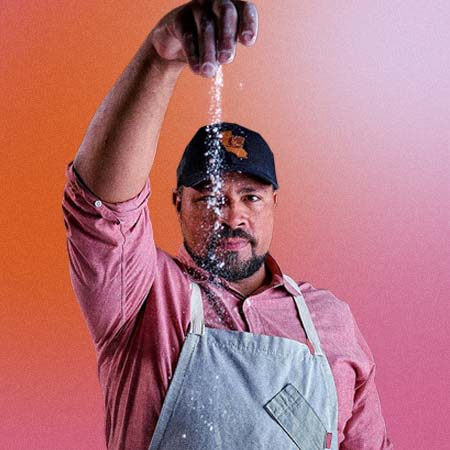
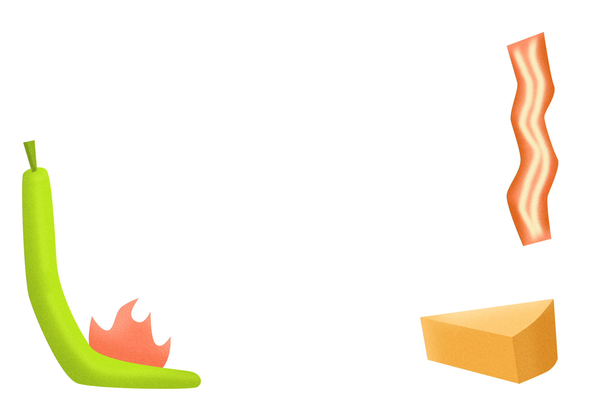
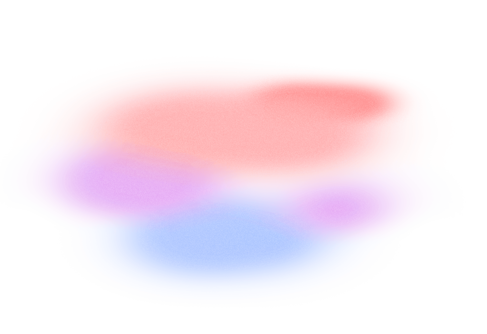
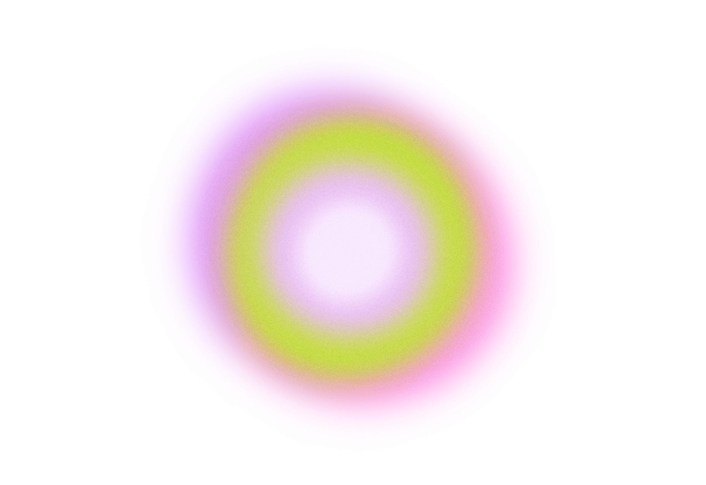

Episode 3
Azikiwee
When an odd hobby turns out to be the glue you needed to make yourself whole again.
In a cross-country jump, Danielle travels to San Francisco to chat with artisan sourdough baker Azikiwee Anderson. For as long as he can remember, Azikiwee’s path has been anything but expected, but the evolution of his quarantine pastime might just be the biggest surprise yet. Here’s the story of a man who took his newfound love of sourdough to the extreme, and is using it to feed his community in more ways than one.
Meet the People

We’re all taught a story has three parts.
But life just isn’t that linear.
What happens when the
middle
is just the beginning?
I’m Danielle Prescod. This is
a Vox Creative production with Straight Talk Wireless.
Episode 3
Act 1
[ Sound of lapping water, fog horn in the distance ]
Let’s take it back to the early days of the pandemic. Summon those buried memories of trying to find any way to distract yourself from the isolation.
For some of us,
that included things like selling turnips on Animal Crossing,
or trying to make that whipped coffee from TikTok.
But there was one at-home activity
that
ruled them all:
making bread.
In 2020, one flour company saw its sales shoot up 2,000%, and yeast could be as hard to come by as hand sanitizer or toilet paper. So bakers everywhere turned to sourdough, which relies on wild yeast in the air.
Not that I would know
baking is too messy for me
But I did Google it for you.
The pandemic might not have turned me into a baker, but it did bring me to podcasting.
And this podcast, in turn, brought me here:
to a street in the Inner Richmond neighborhood of San Francisco,
to meet someone who got really, really into it:
Azikiwee Anderson.
Azikiwee Anderson
So the thing that a lot of people don't understand with being kind of like an artisan sourdough is, we have a long ferment process, which is really, really good because the little yeasty bugs and all the things that bacteria that that pre-digest the flour is,
makes it bioavailable for your stomach...
So a lot of people when they make
or when they think of bread...
See? Really into it. And while he’s been perfecting his own process, Azikiwee has also done his part to spread the gospel of this new national pastime.
Mike Giacinti
When COVID hit, you know, we're all stuck in our house, I think I asked him maybe about baking bread because I'd never done it. And it was suddenly this thing that was super popular to do. So it was sort of a cliche that we’re both trying to make sourdough.
That’s Azikiwee’s friend of about 25 years, Mike Giacinti. He’ll tell you that Z -- that’s Azikiwee’s nickname -- is adventurous, fiercely loyal, and always down to try something new.
Mike
And I asked him and he had these, these two sourdough starters and one was called James Howlett the Third. And he had a funny name for the other one. So I cycled over and we had a socially distant pickup of James Howlett the Third. And then I started trying to make bread and I'd send him photos and he'd send me photos of what he was making and [laughs] we tried to work through it. When I say we, I mean all I did was ask for his advice and he would give it to me. I didn’t really have much to provide.
Most pandemic bakers made sourdough to pass the time. They baked a few loaves and then called it quits.
Mike?
He managed to kill his first starter pretty early on.
So Z replaced it.
Mike used that starter until he moved to the Netherlands. But then he accidentally left the jar under the seat of a rental van at LAX. He won’t even name his new replacement starter because he doesn’t want to be sad when he inevitably kills it.
But Azikiwee took things a bit f u r t h e r.
Azikiwee
My wife actually teases me, because she said early on, like, "Oh, here we go," you know? And I'm like, "What does, what does that mean?" And she's like, she's like, "You can't do anything small."
Danielle
What was it like when he started making multiple loaves and it was like, slowly taking over your home?
Tamsen Anderson
Right at the moment it got bigger and bigger, you know, from one loaf to four loaves, to six loaves, to eight loaves, to 12 loaves, and it ramped pretty quickly.
That’s Tamsen, Azikiwee’s wife. She had a front row seat to Z’s rising sourdough obsession.
Tamsen
Most people would have stopped like 20 iterations earlier and said, "That's amazing sourdough." And I did. I told him, like, "This is the best sourdough I've ever had made fresh for me." But it's not where he stopped. He's like, "Nope, I know it can be better. I know it can be better. I know it can be better." So I kept, I kept saying, "Well, this is now better than the last one. Oh, no, this one's better than the last one." And this went on and on.
Z plays this increase in momentum off casually. Like, once you make one, it’s not that hard to make twenty.
Azikiwee
One loaf a day or one loaf a week, to two loaves at a time because if I was going through all the issues of making it, I might as well have double. And then it was like, well, it almost takes the same amount of time to do 12 as it does to do one. And I really do feel like that's where it's kind of like, the community of it is, when I started making it, I started being like, okay, well I have 12 loaves. I can't eat 12 loaves, you know. But it took me only an hour more to make 12 loaves, so I might as well, you know, give it to my neighbors and, you know, and, you know, pass it around.
And all of those things kind of like, started this concept in my mind of like, what is possible, and then it got to a place where it wasn't physically possible for me to do as much as was needed.
Azikiwee
So like stretch, fold, stretch, fold, turn. This is kind of a high hydration dose so, so as I'm doing this, you'll notice it like stiffens up right? It was like the blob. And now if you put your hand in water just a little bit-
Danielle
Me!?
Azikiwee
Yeah.
Danielle
Okay.
Azikiwee
And then give it a little push on it.
Danielle
Oh my god!
Azikiwee
So it stiffens up right?
Danielle
Yeah
Azikiwee
At the beginning it's like, it's almost like putty and then it'll, it gets stiffer.
That’s me in Z’s professional kitchen. This man went from a random baking experiment just over a year ago to opening his own restaurant-quality bakery in San Francisco’s famous Fisherman’s Wharf. It’s called Rize Up.
You Hamilton nerds will appreciate the fact that the name was inspired by the song “My Shot.” For the rest of you, there’s a line in a song that goes, “when you’re living on your knees, you rise up/tell your brother that he’s gotta rise up/tell your sister that she’s gotta rise up”.
I can’t overstate just how big of a deal Z and Rize Up are in the Bay Area. His loaves have become to the bread world what Supreme is to streetwear.
They’re status loaves.
Not only has Z casually perfected an ancient food, but he has also reinvented it through modern flavors.
And those flavors - like Ube and Paella - are what make those bread drops so competitive.
Danielle
How do you think of ideas that you want to make into flavors?
Azikiwee
I've traveled a lot. And so my mind has a Rolodex full of things that I really like. So I kind of take it as a challenge to come up with really cool ideas, oh, could I do something with quince? Could I do something with you know, like, a marmalade like, how can I incorporate other things that are really cool, and make people reassess what sourdough is. And that's kind of what I'm having fun doing.
My favorite flavor, that I can eat just straight, would have to be the jalepeño bacon cheddar. Because I fire roast the jalepeños myself. And so they have all of the heat. And then it has the smoke of the bacon. And it has all of that sharp note of the cheddar cheese.

After our interview, Z gave me a bacon and chocolate sourdough loaf. I was literally counting down the seconds to when I could cut myself a slice in my hotel room.
And then, when I was finally alone with my loaf, I realized – I didn’t have a knife. So I just tore into it. Crumbs went everywhere. And you know what? It was worth it. A chewy crust, a light, fluffy bite. That sourdough tang balancing bacon and chocolate.
I’ll remember that loaf for a long time.
In a city famed for its sourdough, ask a bread lover who makes the loaf they’re dying to get their hands on, and it’s probably Azikiwee. Which means Z recently had to face the day all successful solopreneurs have to one day face: when they can’t do it solo anymore.
Azikiwee
Since I just hired a couple new people, now they're starting to take certain parts of it and own it, so I can actually not be there 18, 20 hours a day, which is kind of cool.
Danielle
Congratulations
Azikiwee
Yeah, I’m really excited...
Starting a business during a global pandemic and recession is difficult, but what I came to learn is that’s what Z does. Because, sure, now, he’s got a cool house, a beautiful family, a thriving business. He’s in a really exciting place. But the path he traveled to get here was difficult in more ways than one.
Episode 3
Act 2
Azikiwee
I don't always know when to speak about the things that kind of made me, me. I want to be genuine and open. But then it's also a lot for a lot of people, that they've never had anything like that happen. They don't really understand it. So I don't want to be off putting, you know, so.
Danielle
Well, I won't be off put by anything. So you can lay it all on me. I want to hear all your stuff.
Azikiwee
Okay. I feel like the first, you know, four or five years of my life was like a fairy tale. Like, you know, at least that's what I get from my mom. Lots of love, lots of happiness, lots of excitement around—like, you know when people say like, like—my mom used to say, like, "We wanted you so much, right?” So there's a certain amount of love when, when you're brought into the world where it's like, so excited to be a parent, so excited to have you, right? And then that changes, not so much like they didn't want to have me, but the reality of my, my parents' life and connection cataclysmically changed.
So my mother was—
went from being a mother of three and super excited,
to a battered woman in a shelter with three kids,
and moved away from what she had made her home,
and sent away with nothing, like, when she got out of the hospital, right?
And I was the eldest child. So, I was old enough, now looking back, and what—after I had kids, which will probably make me cry—looking back at where they were developmentally at that age, and then imagining myself at that age being the one to like, find my mom, or being the one to have to, like, break the crib open to get my brother and try to pack things in a bag so that we could—I could go to the next door so they could call the ambulance to come get my mom because she couldn't get herself up. You know, those sort of things.
The social workers told his mom that the best way to protect herself and her family was to move. Z was only 5 years old.
Azikiwee
And then, they were like, "Look, we need to get you and your children out of here because you're in a very unsafe place, and somebody is going to die.” Like, either you're going to kill him or he's gonna kill you. And it's just—it's not okay.
They put us on a Greyhound. And we showed up here in San Francisco with, you know, like, $1.50 or something. And so, my mom thought that there was going to be someone there to meet us, and there wasn't. And we just basically lived in the Greyhound bus station for however long it took until they realized that they hadn't found us.
Like, the only reason that we didn't really starve was because a nice man kept bringing an extra lunch that worked at the bus station. And so, that thing that would — you would think would make most people or break most people, or make people harden — really made me feel like, well, if somebody took care of us, we should always be there for other people, right?
Today, Rize Up customers can buy into the Pay It Forward program, which allows Z to donate loaves to local food banks and homeless shelters.
Z’s family moved about three hours northeast to Chico after landing in San Francisco, which was an abrupt change in and of itself. But then he started going to school, where almost all of the students were white.
It was rough for him. His classmates treated him like he didn’t deserve to be there.
Like he was a threat.
Azikiwee
And I had a hard time in school as being dyslexic and being one of the only Black kids in my school. I was really angry at the world, and realized that they didn't really want me there, and they treated me kind of not really cool. And I got to a place where I'm like, well, if you don't like me and you seem to think I'm not worth anything, then I don't care what you think, right? And then I got to a place where I was just... angry guy.
I got into lots of fights, got kicked out of school, went to independent study for a while, where I had a wonderful teacher named Daryl van Osteen who kind of knocked me back into shape.
And he was kind of like,
"You want to, you want to really piss them off? Get A’s."
And I was like, ooh, some reverse psychology [Laughs] And, I kind of had a "kill them with kindness, the only way to prove them wrong is to succeed" moment.
This is a feeling that a lot of Black people and other marginalized groups will recognize. This is what it’s like to exist in a society that is so eager to dismiss us.
We can’t just be “okay”
or even “good”
we have to be
EXCELLENT
The most oppressed groups have to meet the highest standards.
And even though Z’s schooling days are long gone, this is still very much a problem.
Thankfully,
someone stepped up to teach Z to channel his anger. When he did, he realized that what he was feeling was a result of a toxic environment.
In other words, it wasn’t him, it was
white supremacy.
Azikiwee
I was in the wrong place, right? Like, if you, if you wake up every single day, and the world sees you, and they think that you're not the right person, sometimes it's not really you. Sometimes it's just where you are. The people there thought I was worthless. But I would go other places. And I realized that they would see me as I was.
And so then, from that moment, I just realized I needed to get out of there, and I needed to get back to the last place I really felt okay, which was here.
So Z came back to San Francisco. And his career - or I should say careers - took off. In fact, it would be easier to list the things that aren’t on Z’s resume than the things that are.
Azikiwee
Well, it—[laughs] it sounds funny, because when I, when I rattle off the things that I've either been into or done at a decent level, it—they, they are so noncongruent that they—it sounds like I'm making stuff up. Like, there was a period of time where I was a blacksmith's apprentice. I was a gymnast at a very high level.
An instructor, so I coached gymnastics for a period of time. That's what I did kind of in my college days. I was a 6'3" Black guy with dreadlocks that coached gymnastics. So, it—I was an oddity. And there were a group of guys that were like, "Hey, you know, we're skaters. Can you come and teach us how to do flips so that we can do them on our skates?"
And I was like, "Sure, I would love to teach you guys how to do flips."
Azikiwee
So I started practicing. So, the next thing you know, I was doing things way outside my skill set really quick. And then I got sponsored. And then that kind of started this whole life of like, getting paid or getting flown around to basically do stunt skating.
And so I skated and tried to be pro and then I started companies, and basically my whole life was basically skating for twenty-plus years.
Quick recap. Z went from being a blacksmith’s apprentice to a gymnastics coach to an inline skater who was so good that companies would fly him all around the country so he could skate. And we’re not even halfway through his career!
Azikiwee
And so, I became a businessman by default. But I never went to business school, and I didn’t really know. So most of it was just designed based on hustle, right? How can I be a part of something that I love and make a difference?
For over 20 year, Z’s whole life was inline skating. But then the Great Recession hit in 2008, and along with his business, his vision for himself and the future crashed.
Azikiwee
And everything kind of fell apart. And I was kind of overextended and in a place where it was just hard. I didn't want to do that anymore.
And then I decided there were only three things I ever wanted to do in my life. One was be a professional singer. One was be a professional athlete. And the other one was be a chef.
So then when I kind of reevaluated after all of that kind of went sideways, and I decided I wasn't gonna do that anymore, it was a natural progression to find my way back into food, because my first job ever at 13 was working at a Cajun food restaurant. So I started culinary school to see if I had the chops to do what I had hoped to do.
And then I started doing private cheffing, which was a good fit because I have children. So instead of working at a restaurant every single day, I could work one or two days a week and make as much money during that period of time as I would basically working two or three weeks in a restaurant. So, it fit my life and, and my family really well.
And then COVID happened.
“And then Covid happened” is something we’re all used to hearing by now. It’s usually followed by an abrupt - often painful - ending.
The same was true for Z. But it also brought him an unexpected beginning.
Episode 3
Act 3
When the pandemic hit, Z’s private cheffing business dried up and, like many of us in March 2020, his life suddenly looked very different than it did the month before. He was stuck inside, quarantined, and trying to find a good use for the extra time.
Danielle
Do you remember the first day that you decided you were going to make a sourdough loaf?
Azikiwee
I do remember the text messages that I got from other friends from school, other parents, where they were like, you know, "You want to—we're doing this thing. Do you want to be a part of it?" kind of. And it was kinda like what a book club would be, except it was kind of a foodie bread club, where it was like, why don't we work on things, we'll take pictures, and we'll send it around.
So it was like, "Oh, yeah, sure. I'll try," you know.
And, you know, that basically changed my life.
And it’s really strange to think… like, I tell people “I didn’t find it. It kind of found me.”
Azikiwee
So when I started, I was horrible at it. I won't say horrible, but I was definitely not good. And then it bothered me that I was—that I couldn't get it, right? And so then I got obsessed, where I was kind of like, I'm gonna bend this to my will. I'm gonna make it work.
But in the act of doing it, I found a certain solace, where it made me feel good just trying. And I don't think we're really taught that that's okay.
It's okay to like
work really hard at something and not be great at it.
It's okay to not give up
and just do it because it actually brings you joy.
This man thrives on competition. And his loaves just kept getting better, and more creative.
It would be easy to blame Z’s sourdough obsession on his competitive nature - but it actually goes deeper than that.
Rize Up Bakery employee reading mission statement
Rize Up Bakery is a fledgling San Francisco based Black-owned micro bakery focused on reinventing and rethinking traditional sourdough.
Rize Up started as a quarantine project in the spring of 2020.
Born in response to the social unrest caused by the murder of George Floyd, and the disparate impact of the pandemic on the Black community, founder Azikiwee Anderson was overcome with the need to make a difference and reconnect with his New Orleans roots and hopefully inspire young Black bakers to think outside of the traditional box.
That’s part of Rize Up Bakery’s mission statement, read by one of Z’s new employees, Cassandra.
Danielle
Can you tell me about Rize Up Sourdough's relationship to Black Lives Matter?
Azikiwee
Being as big as I am and being as sad and upset and angry as I was, I felt like I didn't—should not be out on the frontlines protesting, and because I didn't feel like I had the right stuff to be a good mouthpiece for the cause, right? I had lots of pain and anger. And so then I found solace in this, because I felt like I could make a change, I could feed people, I could be part of community, I could raise awareness, without being out in the street and putting myself at risk, even more so than I am just walking and driving around in the city in general. Not particularly San Francisco, but in the world as a Black man.
I always feel like I’m walking a knife’s edge.
Azikiwee
Like, there's a pressure to like, you know, not be what people think that we are or that we represent, right, as a group. That was actually one of the hardest things that I was going through when this all started, is I didn't really know if the things that I chose to be, if the way that I chose to represent myself, was innately who I was, or a response to not be what other people thought I might be, right? I'm like, do I even know myself? Like, like, you know, am I smiling? Is that considered shucking and jiving, because I don’t want to offend people?
Azikiwee
Like, you know, is it okay for me to really be angry? Because I'm really angry. But as soon as I get angry and start waving my hands around, people put their hands on their guns. Like I can’t even be angry.
And I get all choked up just thinking about it. Because it's stressful, you know. I'm like, it, it just does—it does a number on my head.
And so, the zen that I found when I was actually shaping dough —all of that disappears, right? And when people are super excited about what I made, all of that disappears, right? And I feel like the excitement that comes with it, it like, it's like a little bit of glue to like, seal back the little broken pieces because I don’t feel like I get that very often.

And as for Tamsen, Azikiwee’s wife?
Tamsen
I do think this one feels different.
Tamsen
I feel like he is now coming into the moment where all of the things he has done in all of his different adventures have crystallized and made what seems like an overnight success, 20 years and 30 years of work and effort and experience. It all comes together in this particular adventure he's on right now which is a lovely combination of it all for him. So it's a joy to watch.
So, yes, Z has spent his life being the only Black person in a room - or industry - but now he’s making sure he won’t be the last. And that goal, that purpose, is what fuels Z every time he steps into his bakery.
Mike
I think that grows with age, you know, you figure out what you're good at, you don't need to, you don't need to put on appearances for, for anybody else. And that's definitely where he is right now. I'm sure he cares if he's successful, but I think he'd still be doing it. If this all goes away, still gonna be out there baking loaves. And, you know, he's seen how happy it makes us all.
And hey, if he does ever need a backup plan? There’s always... beatboxing?
Azikiwee
Yeah, I can definitely beatbox.
[Azikiwee begins to beatbox:
a fun, boisterous beat emerges from behind his hands cupped over his mouth]

© 2021 Vox Media, Inc. All Rights Reserved
Editorial Team
Art Direction / Illustration
Lauren O’Connell
Product Design
Uy Tieu